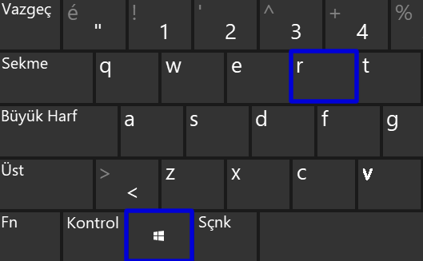

DISKPART ile USB'yi biçimlendirme
Başlat + R tuş kombinasyonu ile Çalıştır uygulamasını çalıştırınız.
"diskpart" yazarak devam edilir ve yönetici izni verilir.
"list disk" komutu girilerek bağlı diskler görüntülenir.
Format atılacak olan disk bulunur. Numarası 2 ise "select disk 2" komutu girilir.
"clean" komutu girilerek disk temizlenir.
"create partition primary"ile birinci bölüm oluşturulur.
Oluşturulan bölümü seçmek için"select partition 1"komutu girilir.
"format fs=fat32" komutu ile bölüm biçimlendirilir. Hızlı biçimlendirme için "format fs=fat32 quick" komutu girilebilir. NTFS dosya biçimi için ise"format fs=ntfs" girilebilir.
"assign" komutu ile biçimlendirilmiş belleğe harf atanır ve tüm işlemler tamamlanmış olur.
© 2020 GHOST
 nurii_byrm
nurii_byrm ghostofficialTR@hotmail.com
ghostofficialTR@hotmail.com